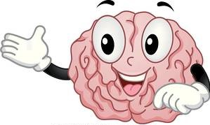

Salud
¿Que es la salud?
La salud es la condición de todo ser vivo que goza de un absoluto bienestar tanto a nivel
físico como a nivel mental y social. Es decir, el concepto de salud no sólo da cuenta de la
no aparición de enfermedades o afecciones sino que va más allá de eso.
En grandes rasgos, la salud puede reconocerse y analizarse desde dos perspectivas:
la de la salud física y la de la salud mental, aunque en realidad se trata de dos aspectos
relacionados entre sí.
Salud fisica
La salud física es un estado de bienestar donde tu cuerpo funciona de manera óptima. Es la ausencia de enfermedades en tu cuerpo y el buen funcionamiento fisiológico de nuestro organismo. Para mantener la salud física en óptimas condiciones, se recomienda realizar ejercicios de forma periódica y tener una dieta equilibrada y saludable, con variedad de nutrientes y proteínas.
Salud Mental
La salud mental, por su parte, apunta a aglutinar todos los factores emocionales y psicológicos que pueden condicionar a todo ser humano y obligarlo a emplear sus aptitudes cognitivas y su sensibilidad para desenvolverse dentro de una comunidad y resolver las eventuales demandas surgidas en el marco de la vida cotidiana.

¿Es lo mismo estar saludable?
Específicamente no es lo mismo, pero tienen una gran parte en común, ya que el estar saludable abarca nuestra parte fisica, a como fue explicado con anterioridad, entonces, ¿Como podemos estar saludables?.
-
Cuide su alimentación
Mantener una buena hidratación y llevar una dieta sana, variada y equilibrada le ayudará a mantener un peso saludable y a reducir el riesgo de enfermedades. Elija alimentos bajos en grasas azucares y sal. Limite el consumo de bebidas excitantes y azucaradas (café, bebidas de cola, té).
-
Ejercite su mente
Los pasatiempos, los juegos de mesa, participar en grupos de discusión, foros, conversaciones amigables, tertulias, leer, aprender nuevas habilidades, etc. le ayudarán a mantener su cerebro activo.
-
Evite tomar tóxicos
El consumo de tabaco, alcohol y otras drogas como el cannabis, cocaína, éxtasis, heroína, ketamina, etc., puede generar graves problemas de salud.
-
Disfrute de su sexualidad
De una manera sana, responsable, libre y placentera. Una sexualidad saludable le permitirá llevar una vida más plena.
-
Realice actividad fisica
La actividad física regular ayuda a mejorar la salud y la sensación de bienestar. Haga aquello que más le entretenga, como caminar, bailar, montar en bicicleta o un deporte de equipo. Ejercicios como el Tai Chi, yoga, pilates, etc. también le ayudarán a sentirse mejor. Su salud, condición física y autoestima mejorarán.
-
Duerma bien
Es importante dormir lo suficiente para sentirse en condiciones apropiadas para llevar a cabo las actividades cotidianas. El cansancio afecta a la concentración, desmotiva y resta energía. Intente adoptar un horario regular en su vida diaria.
¿El deporte tiene relevancia con ella?
A como ya debieron de haberlo notado, totalmente. Ahora bien ¿Que deportes practicar? ¿Cuales existen? ¿Extremos? no esperes más, vamos a averiguarlo.